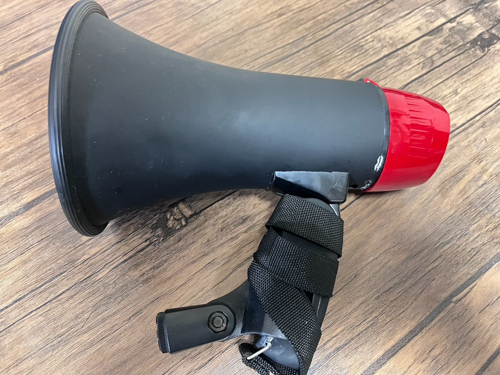
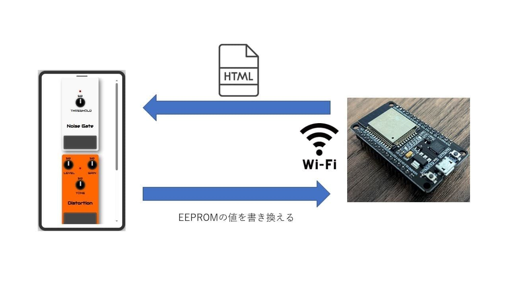
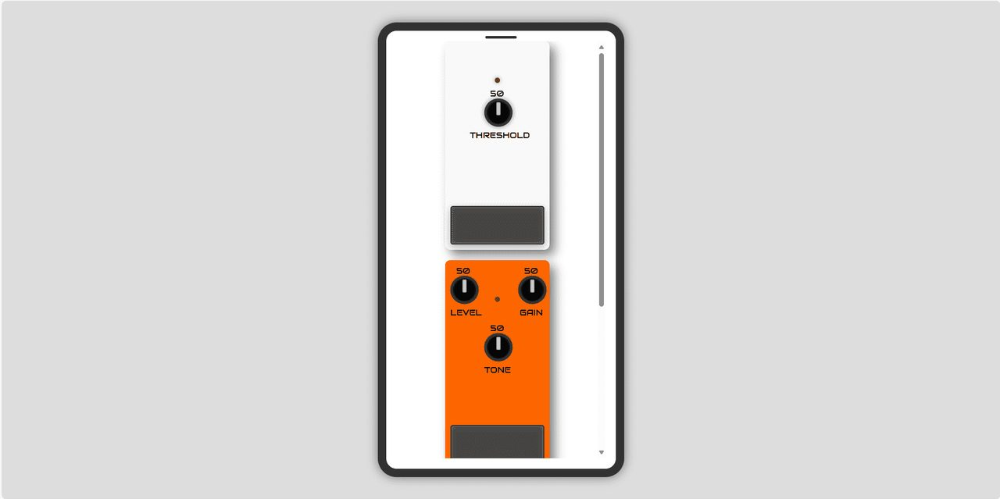

概要
小型のダイナミックマイクからの音声をA/D変換し、ESP32上でエフェクト処理を行ったのち、内蔵DACから出力する構成のメガホンです。 エフェクトのパラメータは、Wi‑Fi接続したスマートフォンのGUIからリアルタイムに変更できます。
外観
メガホン型の筐体にマイク・ESP32・出力回路を一体で組み込んでいます。ケーブル1本でPAへ直結できるため、ステージ上での取り回しが簡単です。

システム構成
小型ダイナミックマイクの音声をESP32でA/D変換し、内部でエフェクト処理を行ったのちライン出力する流れです。アナログ回路で構成していたVer.1に対し、本機は処理系をすべてデジタル化しています。

GUI
エフェクトのパラメータは、Wi-Fi接続したスマートフォンのGUIから変更します。エフェクターのペダルを模した画面で、ライブ中でも直感的にツマミを操作できます。下のリンクから実際のGUIを試せます。
